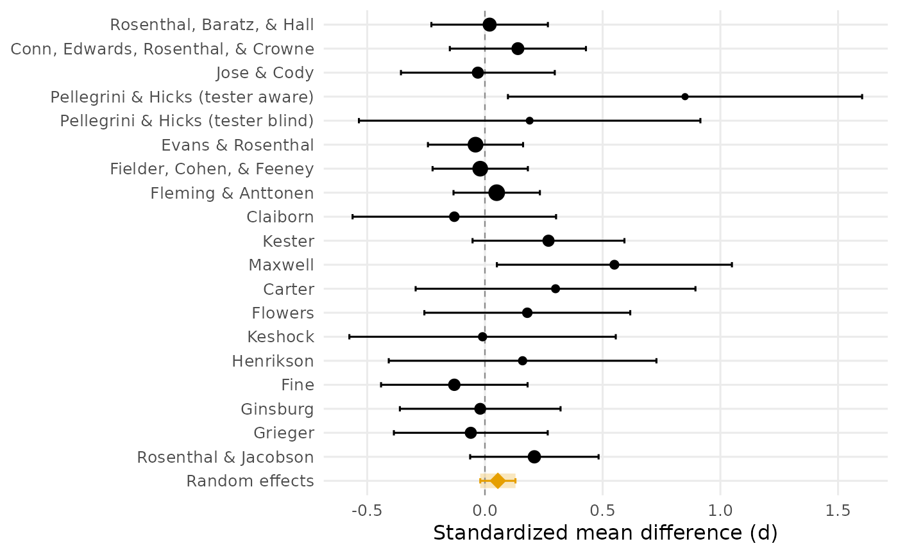

Draws the meta-analyst's central picture: every study's effect size with its confidence interval, the random effects pooled estimate beneath them, and, by default, the prediction interval showing where the effect of a new study is expected to land. Point sizes are proportional to precision (inverse variance), so the eye weighs the studies the way the model does. Requires ggplot2.
Usage
plot_forest(
yi,
vi,
labels = NULL,
method = c("reml", "pm", "dl", "fe"),
hartung_knapp = TRUE,
conf_level = 0.95,
show_prediction = TRUE,
xlab = "Effect size",
title = NULL,
palette = "okabe_ito",
colors = NULL
)Arguments
- yi
Numeric vector of study effect sizes.
- vi
Sampling variances of
yi.- labels
Optional study labels, one per study; defaults to
"Study 1","Study 2", and so on, in the supplied order.- method, hartung_knapp
Passed to
meta_esfor the pooled row ("reml"andTRUEby default).- conf_level
Confidence level for the per-study and pooled intervals. Defaults to 0.95.
- show_prediction
Logical: draw the prediction interval band on the pooled row? Default
TRUE(ignored formethod = "fe", which has none).- xlab
Label for the effect size axis. Defaults to
"Effect size".- title
Optional plot title.
- palette
Palette name. Defaults to
"okabe_ito", base R's colorblind-safe Okabe-Ito palette;"tableau"is also available.- colors
Optional length-2 vector overriding the palette: the study color and the pooled-estimate color.
See also
meta_es, meta_smd, and
meta_r for the numbers behind the picture;
teacher_expectancy for the example data.
Other meta-analysis:
combine_p(),
meta_contrast(),
meta_es(),
meta_r(),
meta_smd()
Author
Ken Kelley kkelley@nd.edu
Examples
# The teacher expectancy literature (Raudenbush, 1984): most studies
# cluster near zero, a few early-induction studies stand out, and the
# prediction interval is wide.
data(teacher_expectancy)
d <- teacher_expectancy$d
n_e <- teacher_expectancy$n_experimental
n_c <- teacher_expectancy$n_control
v <- (n_e + n_c) / (n_e * n_c) + d^2 / (2 * (n_e + n_c))
plot_forest(d, v, labels = teacher_expectancy$author,
xlab = "Standardized mean difference (d)")
#> `height` was translated to `width`.
